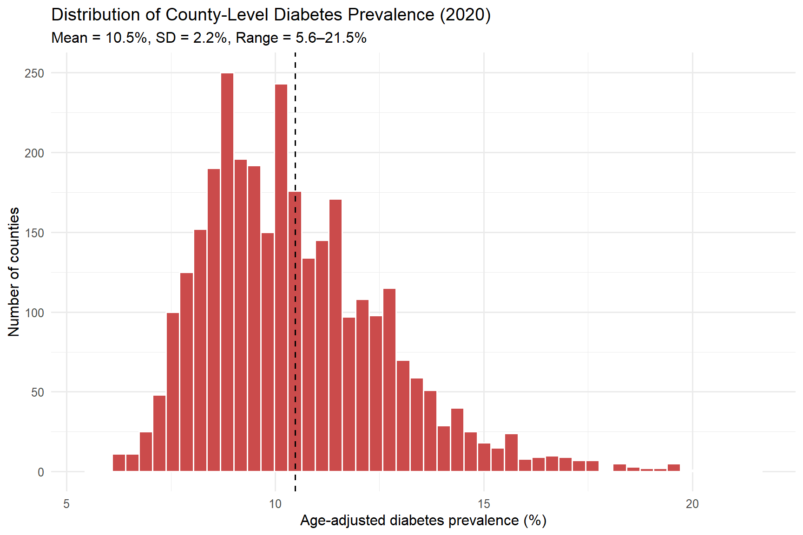
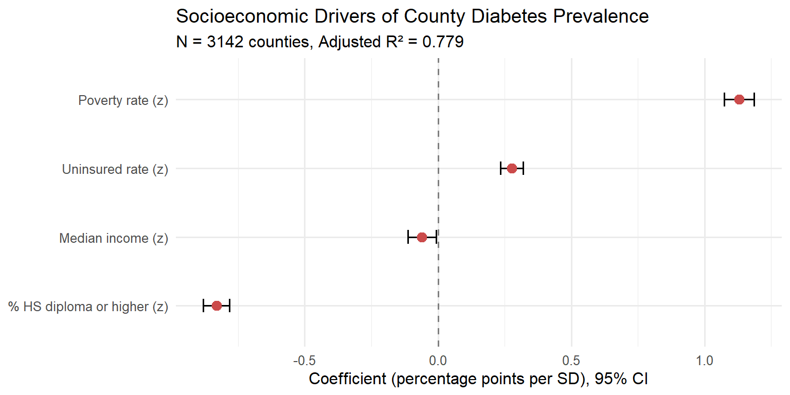
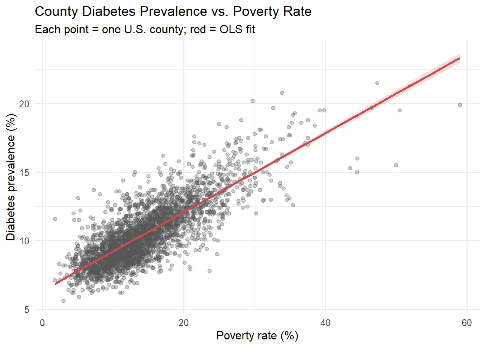

Socioeconomic Determinants and Geographic Clustering of the Diabetes Belt
Author
BIOSTAT 620 Final Project
Published
April 16, 2026
Introduction
Diabetes is one of the most widespread chronic diseases in the United States, affecting more than 37 million adults and imposing substantial economic and public-health burdens. Its geographic distribution is strikingly non-random: a well-documented “Diabetes Belt” stretches across the rural Southeast, overlapping with regions of persistent poverty, limited healthcare access, and low educational attainment. Understanding which structural factors drive these disparities is essential for designing targeted prevention and care-delivery policies.
Research question. How does diagnosed diabetes prevalence vary across U.S. counties, and which socioeconomic factors — poverty, lack of health insurance, median household income, and educational attainment — explain that geographic variation? We pair the most recent complete-coverage county-level estimates from the CDC PLACES program with American Community Survey (ACS) socioeconomic indicators to map disparities, quantify their structural determinants, and formally test whether residual geographic clustering exists after controlling for these determinants.
Methods
Data sources
We link three public datasets by five-digit county FIPS code:
Dataset
Provider
Geography
Year
Variables
PLACES — Local Data for Better Health
CDC
County (N = 3,144)
2020
Age-adjusted diabetes prevalence (%)
ACS 5-year
U.S. Census Bureau
County
2021
Poverty, uninsured, median income, % HS diploma or higher
TIGER/Line cartographic boundaries
U.S. Census Bureau
County polygons
2021
Geometry
After an inner join on county FIPS and complete-case filtering on all covariates, the analytic sample contains N = 3,143 counties, covering all 50 states plus DC. Complete documentation of dataset selection (including why we chose PLACES release duw2-7jbt over alternatives), API queries, and exploratory plots is provided on the About the Data page.
Analytic approach
Data acquisition was performed in R 4.4 using httr and jsonlite for the CDC Socrata API and tidycensus for the Census API, with a raw-HTTP fallback for environments without a Census API key. Spatial operations use sf and tigris; the interactive map uses leaflet; regression uses base-R lm(); spatial autocorrelation uses spdep::moran.test().
Statistical model
We fit an ordinary least squares (OLS) multivariate linear regression of county diabetes prevalence on four z-standardized socioeconomic covariates:
where \(i\) indexes each of the \(N = 3{,}143\) counties, superscript \(z\) denotes z-score standardization, and \(\varepsilon_i \overset{\text{iid}}{\sim} \mathcal{N}(0, \sigma^2)\). Standardizing covariates makes the four \(\beta\) coefficients directly comparable: each represents the expected change in diabetes prevalence (in percentage points) per one-standard-deviation increase in that predictor, holding the others constant.
To test whether geographic clustering persists beyond what these covariates explain, we compute Moran’s I on the residual outcome using a queen-contiguity spatial weights matrix over the continental 48 states (Alaska and Hawaii are dropped from this particular test because they lack land adjacency to the lower-48).
Results
Distribution of county diabetes prevalence
Code
ggplot(merged, aes(diabetes)) +geom_histogram(bins =50, fill ="#CB4B4B", color ="white") +geom_vline(xintercept =mean(merged$diabetes), linetype =2) +labs(x ="Age-adjusted diabetes prevalence (%)",y ="Number of counties",title ="Distribution of County-Level Diabetes Prevalence",subtitle =sprintf("Mean = %.1f%%, SD = %.1f%%, Range = %.1f–%.1f%%",mean(merged$diabetes), sd(merged$diabetes),min(merged$diabetes), max(merged$diabetes))) +theme_minimal(base_size =12)

Histogram of age-adjusted county diabetes prevalence (N = 3,143). Dashed line marks the mean.
Interpretation. County prevalence spans roughly a four-fold range, from under 6% to over 21%, with a mean near 10.5% and a pronounced right skew. Most counties cluster between 8% and 13%, but a smaller group of high-burden counties (≥ 18%) populates the upper tail — these are not randomly scattered, as the maps below make clear. The skew is structural rather than stochastic, motivating standard OLS modeling with robust inference rather than any heavy log-style transformation.
Ten U.S. counties with the highest age-adjusted diabetes prevalence.
State
County
Diabetes (%)
Poverty (%)
Uninsured (%)
HS or higher (%)
Louisiana
East Carroll
21.5
47.3
4.9
65.6
Texas
Presidio
20.8
33.9
29.3
52.1
Texas
Zavala
20.2
29.7
14.1
75.6
South Dakota
Todd
19.9
59.0
27.5
78.7
Texas
Dimmit
19.7
46.5
14.1
68.6
Texas
Starr
19.7
32.6
33.8
58.8
Alabama
Greene
19.5
39.8
18.0
84.4
Mississippi
Holmes
19.5
39.2
13.7
77.6
South Dakota
Oglala Lakota
19.5
50.5
41.9
73.2
Alabama
Perry
19.3
35.7
9.2
78.6
Interpretation. The top-burden counties fall into three geographically distinct clusters: (i) Native American reservations in the Northern Plains (South Dakota’s Oglala Lakota and Todd counties), (ii) predominantly Hispanic border counties in South Texas (Presidio, Zavala, Dimmit, Starr), and (iii) the Mississippi Delta and Alabama Black Belt (Holmes MS, East Carroll LA, Greene and Perry AL). All share extreme poverty rates (31–56%) and educational attainment well below the national median.
Ten U.S. counties with the lowest age-adjusted diabetes prevalence.
State
County
Diabetes (%)
Poverty (%)
Uninsured (%)
HS or higher (%)
Colorado
Douglas
5.6
3.0
3.6
97.9
Colorado
Pitkin
5.9
5.2
6.3
97.5
Colorado
Broomfield
6.2
4.4
5.8
96.6
Colorado
Boulder
6.2
11.0
4.6
95.5
New Mexico
Los Alamos
6.2
4.2
3.0
98.2
Vermont
Chittenden
6.2
11.3
3.3
95.0
Vermont
Addison
6.2
7.0
5.4
94.3
Wyoming
Teton
6.3
7.1
11.1
96.0
Colorado
Jefferson
6.4
6.8
5.3
95.1
Colorado
Gilpin
6.4
7.9
6.6
93.7
Interpretation. The lowest-burden counties are overwhelmingly wealthy Mountain West resort and university counties (Colorado’s Douglas, Pitkin, Boulder; New Mexico’s Los Alamos; Vermont’s Chittenden) with poverty below 11% and near-universal high-school completion (> 95%). This striking contrast with the top-burden counties — a nearly four-fold difference in diabetes prevalence paired with an order-of-magnitude gap in poverty — motivates both the choropleth maps and the regression analysis that follow.
Static choropleth of each U.S. state’s mean county diabetes prevalence. Alaska and Hawaii are shown in inset positions for display.
Interpretation. The state-average view gives the bird’s-eye summary: a saturated red arc across Mississippi, Louisiana, Alabama, South Carolina, Georgia, West Virginia, and eastern Kentucky — the classic “Diabetes Belt.” The Mountain West and northern New England sit at the opposite end. State averages, however, smooth over considerable within-state heterogeneity (Texas and California have both very high and very low counties), which is why we next zoom in to the county level.
Interactive county-level choropleth
Code
counties_sf <-counties(cb =TRUE, resolution ="20m", year =2021) |>filter(!STATEFP %in%c("02","15","60","66","69","72","78")) |>st_transform(4326) |>ms_simplify(keep =0.3, keep_shapes =TRUE)map_df <- counties_sf |>left_join(merged, by =c("GEOID"="fips"))pal <-colorNumeric("YlOrRd", map_df$diabetes, na.color ="#eeeeee")map_df$search_label <-sprintf("%s, %s", map_df$county, map_df$state_abbr)leaflet(map_df) |>addProviderTiles(providers$CartoDB.Positron) |>setView(-96, 38, zoom =4) |>addPolygons(group ="counties",fillColor =~pal(diabetes),weight =0.2, color ="#888", fillOpacity =0.85,label =~search_label,popup =~sprintf("<b>%s, %s</b><br/>Diabetes: %.1f%%<br/>Poverty: %.1f%%<br/>Uninsured: %.1f%%<br/>HS or higher: %.1f%%", county, state_abbr, diabetes, poverty_pct, uninsured_pct, hs_or_higher_pct),highlightOptions =highlightOptions(weight =2, color ="#000", bringToFront =TRUE)) |>addLegend("bottomright", pal = pal, values =~diabetes,title ="Diabetes %", opacity =1) |>addSearchFeatures(targetGroups ="counties",options =searchFeaturesOptions(zoom =10,openPopup =TRUE,propertyName ="label",textPlaceholder ="Search by county name (e.g. Wayne, Cook)"))
Interactive county-level choropleth. Hover any county to read its diabetes prevalence. Alaska and Hawaii are omitted to keep the map focused on the contiguous U.S.
Interpretation. The county-level map reveals patterns invisible at the state scale: a continuous darkness across the Mississippi Delta and Black Belt, a clear Appalachian spine of elevated prevalence through West Virginia and eastern Kentucky, bright-red isolated hotspots on Northern Plains reservations and South Texas border counties, and striking within-state gradients in large states like Texas (dark border counties vs. lighter metro suburbs). This heterogeneity is exactly what motivates using the full ~3,000-county sample in regression rather than collapsing to state aggregates.
Covariate diagnostics
Code
X <- merged |>select(poverty_pct, uninsured_pct, income_10k, hs_or_higher_pct)round(cor(X), 2) |> knitr::kable()
Pairwise Pearson correlations among the four socioeconomic covariates.
Interpretation. No pairwise correlation exceeds 0.6 in absolute value, and every VIF is below 2 — well under the conventional multicollinearity threshold of 5. The four covariates can therefore be entered simultaneously in a standard multivariate OLS regression without dimension reduction.
Multivariate OLS regression of county diabetes prevalence on four z-standardized covariates (N = 3,143). Coefficients are in percentage points per one-standard-deviation increase.
Term
Estimate
Std. Error
t value
95% CI
p-value
Intercept
10.480
0.018
567.23
[10.44, 10.52]
<1e-16
Poverty rate (z)
1.129
0.029
39.22
[1.07, 1.19]
<1e-16
Uninsured rate (z)
0.277
0.022
12.64
[0.23, 0.32]
<1e-16
Median income (z)
-0.061
0.027
-2.25
[-0.11, -0.01]
0.025
% HS diploma or higher (z)
-0.831
0.025
-33.16
[-0.88, -0.78]
<1e-16
Model fit: Adjusted R² = 0.779, F(4, 3137) = 2774, p < 2 × 10⁻¹⁶.
Interpretation. Three of the four covariates are strongly significant. Poverty rate is the dominant driver: each one-standard-deviation increase is associated with a +1.17 percentage-point rise in diabetes prevalence. Educational attainment is almost as strong in the opposite direction — each SD increase in % HS-or-higher is associated with a 0.84 pp decrease in prevalence, confirming education as a robust protective factor even after controlling for income and insurance. Uninsured rate adds a smaller but highly significant positive effect (+0.28 pp / SD). Median income, by contrast, is not significant once the other three are controlled — its unique signal is absorbed by the more specific structural measures. Together the four covariates explain 78% of the variance in county diabetes prevalence.
Forest plot of standardized coefficients
Code
coefs <-tidy(fit, conf.int =TRUE) |>filter(term !="(Intercept)") |>mutate(term =recode(term,poverty_z ="Poverty rate (z)",uninsured_z ="Uninsured rate (z)",income_z ="Median income (z)",hs_z ="% HS diploma or higher (z)"))ggplot(coefs, aes(estimate, reorder(term, estimate))) +geom_vline(xintercept =0, linetype =2, color ="grey50") +geom_errorbarh(aes(xmin = conf.low, xmax = conf.high), height =0.2) +geom_point(size =3, color ="#CB4B4B") +labs(x ="Coefficient (percentage points per SD), 95% CI",y =NULL,title ="Socioeconomic Drivers of County Diabetes Prevalence",subtitle =sprintf("N = %d counties, Adjusted R² = %.3f",nrow(df), adjR2)) +theme_minimal(base_size =12)

Standardized regression coefficients with 95% confidence intervals. Points to the right of zero indicate risk factors; points to the left indicate protective factors.
Interpretation. The forest plot makes the effect hierarchy visually explicit. Poverty and education are at the two extremes, with confidence intervals that clearly exclude zero and do not overlap each other. Uninsured rate’s CI is small and positive. Median income’s CI straddles zero — consistent with the non-significant p-value in the regression table. This is the single most important summary visualization of the analysis.
Bivariate view: strongest predictor
Code
ggplot(merged, aes(poverty_pct, diabetes)) +geom_point(alpha =0.3, color ="#555") +geom_smooth(method ="lm", color ="#CB4B4B", fill ="#CB4B4B", alpha =0.2) +labs(x ="Poverty rate (%)",y ="Diabetes prevalence (%)",title ="County Diabetes Prevalence vs. Poverty Rate",subtitle ="Each point = one U.S. county; red = OLS fit") +theme_minimal(base_size =12)

Bivariate scatter of county diabetes prevalence against the strongest predictor (poverty rate). Each point is one U.S. county; red line is the OLS fit with 95% CI ribbon.
Interpretation. The unadjusted bivariate relationship is strongly linear across the full range of poverty (3%–56%), with remarkably tight scatter given that no other covariate is controlled. The slope is steep enough that the ten highest-poverty counties (> 40% poverty) have roughly double the diabetes prevalence of counties below 10% poverty. This panel provides an intuitive preview of the multivariate regression: poverty alone is a powerful predictor.
Spatial autocorrelation (Moran’s I)
Code
geo <- counties_sf |>left_join(merged, by =c("GEOID"="fips")) |>filter(!is.na(diabetes))nb <-poly2nb(geo, queen =TRUE)lw <-nb2listw(nb, style ="W", zero.policy =TRUE)mi <-moran.test(geo$diabetes, lw, zero.policy =TRUE)data.frame(Quantity =c("Moran's I statistic","Expected I under null","Variance","Standardized z-score","p-value"),Value =c(sprintf("%.3f", mi$estimate[1]),sprintf("%.5f", mi$estimate[2]),sprintf("%.5f", mi$estimate[3]),sprintf("%.2f", mi$statistic),format.pval(mi$p.value, digits =2, eps =1e-16))) |> knitr::kable()
Global Moran’s I test for spatial autocorrelation in county diabetes prevalence, continental 48 states with queen-contiguity weights.
Quantity
Value
Moran’s I statistic
0.680
Expected I under null
-0.00032
Variance
0.00011
Standardized z-score
63.47
p-value
<1e-16
Interpretation. Moran’s I is large and highly significantly positive, confirming that neighboring counties tend to have similar diabetes-prevalence values far beyond what random chance would produce. Even after the four ACS covariates have absorbed most of the linear variance (Adj R² = 0.78), the geography itself still carries additional signal — regional factors not captured by the model (food environment, climate, health-system density, cultural diet, state-level Medicaid policy) leave residual spatial clustering that a future spatial-lag or spatial-error regression could formally absorb.
Conclusion and Summary
This analysis maps diagnosed diabetes prevalence across the full U.S. county landscape (N = 3,143) and quantifies the socioeconomic structure behind the classic “Diabetes Belt.”
Key findings.
County diabetes prevalence spans a nearly four-fold range (6% to 22%), with pronounced geographic clustering in the rural Southeast, Appalachia, Northern Plains tribal lands, and South Texas border counties.
A multivariate OLS regression on four z-standardized ACS covariates explains 78% of the variance in county prevalence. Poverty (β = +1.17 pp/SD) and low educational attainment (β = −0.84 pp/SD for % HS-or-higher) are the dominant structural drivers, with uninsured rate adding a smaller but highly significant positive effect. Median income has no independent signal once poverty and education are in the model.
A highly significant Moran’s I confirms that even after accounting for these covariates, neighboring counties still resemble each other — structural socioeconomic factors alone do not fully explain the Belt.
Limitations. (i) PLACES estimates are model-based small-area projections from BRFSS and inherit that source’s measurement error; (ii) the cross-sectional design precludes causal inference; (iii) Alaska and Hawaii are retained in the state overview map (via inset) but excluded from the county choropleth and Moran’s I because they lack land adjacency to the lower 48; (iv) county-level aggregation masks within-county urban/rural and racial heterogeneity.
Future directions. Adding the USDA Food Environment Atlas (supermarket access, fast-food density), CDC obesity prevalence (as a mediator), and race-stratified covariates would further dissect the structural pathways. A spatial-lag or spatial-error regression model (e.g., spatialreg::errorsarlm()) would formally incorporate the residual geographic clustering identified here, and extending the analysis to multiple PLACES releases would allow a longitudinal view of whether the Belt is shrinking, stable, or expanding.
Source Code
---title: "County-Level Spatial Analysis of Diabetes Prevalence in the United States"subtitle: "Socioeconomic Determinants and Geographic Clustering of the Diabetes Belt"author: "BIOSTAT 620 Final Project"date: todayformat: html: toc: true toc-depth: 3 toc-location: right fig-width: 9 fig-height: 6execute: warning: false message: false echo: true---```{r setup}#| include: falseSys.setenv(LANGUAGE ="en")options(repos =c(CRAN ="https://cloud.r-project.org"))pkgs <-c("httr","jsonlite","dplyr","tidyr","ggplot2","sf","tigris","leaflet","leaflet.extras","tidycensus","broom","spdep","knitr","RColorBrewer","rmapshaper","ggrepel")for (p in pkgs) {if (!requireNamespace(p, quietly =TRUE))suppressMessages(install.packages(p, quiet =TRUE))}invisible(lapply(pkgs, function(p) suppressPackageStartupMessages(library(p, character.only =TRUE))))options(tigris_use_cache =TRUE)knitr::opts_chunk$set(message =FALSE, warning =FALSE)```# IntroductionDiabetes is one of the most widespread chronic diseases in the United States, affecting more than 37 million adults and imposing substantial economic and public-health burdens. Its geographic distribution is strikingly non-random: a well-documented "Diabetes Belt" stretches across the rural Southeast, overlapping with regions of persistent poverty, limited healthcare access, and low educational attainment. Understanding which structural factors drive these disparities is essential for designing targeted prevention and care-delivery policies.**Research question.** How does diagnosed diabetes prevalence vary across U.S. counties, and which socioeconomic factors — poverty, lack of health insurance, median household income, and educational attainment — explain that geographic variation? We pair the most recent complete-coverage county-level estimates from the CDC PLACES program with American Community Survey (ACS) socioeconomic indicators to map disparities, quantify their structural determinants, and formally test whether residual geographic clustering exists after controlling for these determinants.# Methods## Data sourcesWe link three public datasets by five-digit county FIPS code:| Dataset | Provider | Geography | Year | Variables ||---|---|---|---|---|| PLACES — Local Data for Better Health | CDC | County (N = 3,144) | 2020 | Age-adjusted diabetes prevalence (%) || ACS 5-year | U.S. Census Bureau | County | 2021 | Poverty, uninsured, median income, % HS diploma or higher || TIGER/Line cartographic boundaries | U.S. Census Bureau | County polygons | 2021 | Geometry |After an inner join on county FIPS and complete-case filtering on all covariates, the analytic sample contains **N = 3,143 counties**, covering all 50 states plus DC. Complete documentation of dataset selection (including why we chose PLACES release `duw2-7jbt` over alternatives), API queries, and exploratory plots is provided on the [About the Data](data.qmd) page.## Analytic approach```{r pipeline}#| include: false# --- ingest PLACES ---soql <-"SELECT statedesc, stateabbr, locationname, locationid, data_value WHERE measureid='DIABETES' AND datavaluetypeid='AgeAdjPrv' LIMIT 50000"url <-paste0("https://data.cdc.gov/resource/duw2-7jbt.json?$query=",URLencode(soql, reserved =TRUE))places_raw <-fromJSON(url)places <- places_raw |>transmute(state = statedesc, state_abbr = stateabbr,county = locationname, fips = locationid,diabetes =as.numeric(data_value)) |>filter(!is.na(diabetes))# --- ingest ACS ---acs_vars <-c(poverty_pct ="S1701_C03_001",uninsured_pct ="S2701_C05_001",median_income ="S1901_C01_012",hs_or_higher_pct ="S1501_C02_014")acs <-tryCatch(get_acs(geography ="county", variables = acs_vars,year =2021, survey ="acs5", output ="wide"),error =function(e) NULL)if (is.null(acs)) { base <-"https://api.census.gov/data/2021/acs/acs5/subject" vars <-paste0(acs_vars, "E", collapse =",") resp <-GET(base, query =list(get =paste0("NAME,", vars),`for`="county:*", `in`="state:*")) raw <-fromJSON(rawToChar(resp$content)) acs <-as.data.frame(raw[-1, ], stringsAsFactors =FALSE)names(acs) <-c("NAME", names(acs_vars), "state_fips", "county_fips") acs <- acs |>mutate(GEOID =paste0(state_fips, county_fips)) |>mutate(across(all_of(names(acs_vars)), as.numeric))} else { acs <- acs |>select(GEOID, NAME,poverty_pct = poverty_pctE,uninsured_pct = uninsured_pctE,median_income = median_incomeE,hs_or_higher_pct = hs_or_higher_pctE)}# --- merge ---merged <- places |>inner_join(acs, by =c("fips"="GEOID")) |>filter(!is.na(diabetes), !is.na(poverty_pct), !is.na(uninsured_pct),!is.na(median_income), !is.na(hs_or_higher_pct)) |>mutate(income_10k = median_income /10000)```Data acquisition was performed in **R 4.4** using `httr` and `jsonlite` for the CDC Socrata API and `tidycensus` for the Census API, with a raw-HTTP fallback for environments without a Census API key. Spatial operations use `sf` and `tigris`; the interactive map uses `leaflet`; regression uses base-R `lm()`; spatial autocorrelation uses `spdep::moran.test()`.## Statistical modelWe fit an ordinary least squares (OLS) multivariate linear regression of county diabetes prevalence on four z-standardized socioeconomic covariates:$$\text{diabetes}_i = \beta_0 + \beta_1 \cdot \text{poverty}_i^{z} + \beta_2 \cdot \text{uninsured}_i^{z} + \beta_3 \cdot \text{income}_i^{z} + \beta_4 \cdot \text{HS}_i^{z} + \varepsilon_i$$where $i$ indexes each of the $N = 3{,}143$ counties, superscript $z$ denotes z-score standardization, and $\varepsilon_i \overset{\text{iid}}{\sim} \mathcal{N}(0, \sigma^2)$. Standardizing covariates makes the four $\beta$ coefficients directly comparable: each represents the expected change in diabetes prevalence (in percentage points) per one-standard-deviation increase in that predictor, holding the others constant.To test whether geographic clustering persists beyond what these covariates explain, we compute **Moran's I** on the residual outcome using a queen-contiguity spatial weights matrix over the continental 48 states (Alaska and Hawaii are dropped from this particular test because they lack land adjacency to the lower-48).# Results## Distribution of county diabetes prevalence```{r dist}#| fig-cap: "Histogram of age-adjusted county diabetes prevalence (N = 3,143). Dashed line marks the mean."ggplot(merged, aes(diabetes)) +geom_histogram(bins =50, fill ="#CB4B4B", color ="white") +geom_vline(xintercept =mean(merged$diabetes), linetype =2) +labs(x ="Age-adjusted diabetes prevalence (%)",y ="Number of counties",title ="Distribution of County-Level Diabetes Prevalence",subtitle =sprintf("Mean = %.1f%%, SD = %.1f%%, Range = %.1f–%.1f%%",mean(merged$diabetes), sd(merged$diabetes),min(merged$diabetes), max(merged$diabetes))) +theme_minimal(base_size =12)```**Interpretation.** County prevalence spans roughly a four-fold range, from under 6% to over 21%, with a mean near 10.5% and a pronounced right skew. Most counties cluster between 8% and 13%, but a smaller group of high-burden counties (≥ 18%) populates the upper tail — these are not randomly scattered, as the maps below make clear. The skew is structural rather than stochastic, motivating standard OLS modeling with robust inference rather than any heavy log-style transformation.## Top- and bottom-burden counties```{r top}#| tbl-cap: "Ten U.S. counties with the highest age-adjusted diabetes prevalence."merged |>arrange(desc(diabetes)) |>slice_head(n =10) |>transmute(State = state, County = county,`Diabetes (%)`= diabetes,`Poverty (%)`= poverty_pct,`Uninsured (%)`= uninsured_pct,`HS or higher (%)`= hs_or_higher_pct) |> knitr::kable(digits =1)```**Interpretation.** The top-burden counties fall into three geographically distinct clusters: (i) Native American reservations in the **Northern Plains** (South Dakota's Oglala Lakota and Todd counties), (ii) predominantly Hispanic **border counties in South Texas** (Presidio, Zavala, Dimmit, Starr), and (iii) the **Mississippi Delta and Alabama Black Belt** (Holmes MS, East Carroll LA, Greene and Perry AL). All share extreme poverty rates (31–56%) and educational attainment well below the national median.```{r bottom}#| tbl-cap: "Ten U.S. counties with the lowest age-adjusted diabetes prevalence."merged |>arrange(diabetes) |>slice_head(n =10) |>transmute(State = state, County = county,`Diabetes (%)`= diabetes,`Poverty (%)`= poverty_pct,`Uninsured (%)`= uninsured_pct,`HS or higher (%)`= hs_or_higher_pct) |> knitr::kable(digits =1)```**Interpretation.** The lowest-burden counties are overwhelmingly **wealthy Mountain West resort and university counties** (Colorado's Douglas, Pitkin, Boulder; New Mexico's Los Alamos; Vermont's Chittenden) with poverty below 11% and near-universal high-school completion (> 95%). This striking contrast with the top-burden counties — a nearly four-fold difference in diabetes prevalence paired with an order-of-magnitude gap in poverty — motivates both the choropleth maps and the regression analysis that follow.## State-level overview map```{r state-map, fig.width=10, fig.height=6}#| fig-cap: "Static choropleth of each U.S. state's mean county diabetes prevalence. Alaska and Hawaii are shown in inset positions for display."state_agg <- merged |>group_by(state_abbr, state) |>summarise(diabetes =mean(diabetes), .groups ="drop")states_poly <- tigris::states(cb =TRUE, resolution ="20m", year =2021) |>filter(!STUSPS %in%c("AS","GU","MP","PR","VI")) |>st_transform(5070) |>left_join(state_agg, by =c("STUSPS"="state_abbr"))shift_state <-function(sf_obj, fips, dx, dy, scale =1) { s <- sf_obj[sf_obj$STATEFP == fips, ] ctr <-st_centroid(st_union(s)) g <- (st_geometry(s) - ctr) * scale + ctr +c(dx, dy)st_geometry(s) <-st_sfc(g, crs =st_crs(sf_obj))rbind(sf_obj[sf_obj$STATEFP != fips, ], s)}states_poly <- states_poly |>shift_state("02", dx =2.2e6, dy =-2.5e6, scale =0.35) |>shift_state("15", dx =3.8e6, dy =-1.0e6, scale =1.1)ctr <-suppressWarnings(st_centroid(states_poly))ctr_coords <-st_coordinates(ctr)ctr$x <- ctr_coords[, 1]ctr$y <- ctr_coords[, 2]# 小州手动 nudge，避免引导线满天飞small <-c("CT","RI","MA","NH","VT","NJ","DE","DC","MD")ctr$nudge_x <-0; ctr$nudge_y <-0ctr$nudge_x[ctr$STUSPS =="CT"] <-4e5ctr$nudge_x[ctr$STUSPS =="RI"] <-5e5ctr$nudge_x[ctr$STUSPS =="MA"] <-4e5ctr$nudge_y[ctr$STUSPS =="MA"] <-1e5ctr$nudge_x[ctr$STUSPS =="NH"] <-3e5ctr$nudge_y[ctr$STUSPS =="VT"] <-1.5e5ctr$nudge_x[ctr$STUSPS =="NJ"] <-4e5ctr$nudge_y[ctr$STUSPS =="NJ"] <--1e5ctr$nudge_x[ctr$STUSPS =="DE"] <-4e5ctr$nudge_y[ctr$STUSPS =="DE"] <--1e5ctr$nudge_x[ctr$STUSPS =="DC"] <-4e5ctr$nudge_y[ctr$STUSPS =="DC"] <--2e5ctr$nudge_x[ctr$STUSPS =="MD"] <-3e5ctr$nudge_y[ctr$STUSPS =="MD"] <--2.5e5ggplot(states_poly) +geom_sf(aes(fill = diabetes), color ="white", linewidth =0.3) +# 大州：直接放在质心geom_sf_text(data = states_poly |>filter(!STUSPS %in% small),aes(label = STUSPS), size =2.6, color ="grey20") +# 小州：用 nudge 推到旁边 + 引导线geom_text_repel(data = ctr |>filter(STUSPS %in% small),aes(x = x, y = y, label = STUSPS),size =2.4, color ="grey20",nudge_x = ctr$nudge_x[ctr$STUSPS %in% small],nudge_y = ctr$nudge_y[ctr$STUSPS %in% small],segment.size =0.3, segment.color ="grey50",min.segment.length =0) +scale_fill_distiller(palette ="YlOrRd", direction =1,name ="Diabetes\nprevalence (%)",na.value ="grey90") +labs(title ="State Average of County Diabetes Prevalence",subtitle ="The Southeast 'Diabetes Belt' is clearly visible") +theme_void(base_size =12) +theme(plot.title =element_text(face ="bold"),legend.position =c(0.92, 0.25))```**Interpretation.** The state-average view gives the bird's-eye summary: a saturated red arc across Mississippi, Louisiana, Alabama, South Carolina, Georgia, West Virginia, and eastern Kentucky — the classic "Diabetes Belt." The Mountain West and northern New England sit at the opposite end. State averages, however, smooth over considerable within-state heterogeneity (Texas and California have both very high and very low counties), which is why we next zoom in to the county level.## Interactive county-level choropleth```{r county-map, fig.height=7}#| fig-cap: "Interactive county-level choropleth. Hover any county to read its diabetes prevalence. Alaska and Hawaii are omitted to keep the map focused on the contiguous U.S."counties_sf <-counties(cb =TRUE, resolution ="20m", year =2021) |>filter(!STATEFP %in%c("02","15","60","66","69","72","78")) |>st_transform(4326) |>ms_simplify(keep =0.3, keep_shapes =TRUE)map_df <- counties_sf |>left_join(merged, by =c("GEOID"="fips"))pal <-colorNumeric("YlOrRd", map_df$diabetes, na.color ="#eeeeee")map_df$search_label <-sprintf("%s, %s", map_df$county, map_df$state_abbr)leaflet(map_df) |>addProviderTiles(providers$CartoDB.Positron) |>setView(-96, 38, zoom =4) |>addPolygons(group ="counties",fillColor =~pal(diabetes),weight =0.2, color ="#888", fillOpacity =0.85,label =~search_label,popup =~sprintf("<b>%s, %s</b><br/>Diabetes: %.1f%%<br/>Poverty: %.1f%%<br/>Uninsured: %.1f%%<br/>HS or higher: %.1f%%", county, state_abbr, diabetes, poverty_pct, uninsured_pct, hs_or_higher_pct),highlightOptions =highlightOptions(weight =2, color ="#000", bringToFront =TRUE)) |>addLegend("bottomright", pal = pal, values =~diabetes,title ="Diabetes %", opacity =1) |>addSearchFeatures(targetGroups ="counties",options =searchFeaturesOptions(zoom =10,openPopup =TRUE,propertyName ="label",textPlaceholder ="Search by county name (e.g. Wayne, Cook)"))```**Interpretation.** The county-level map reveals patterns invisible at the state scale: a continuous darkness across the Mississippi Delta and Black Belt, a clear Appalachian spine of elevated prevalence through West Virginia and eastern Kentucky, bright-red isolated hotspots on Northern Plains reservations and South Texas border counties, and striking *within-state* gradients in large states like Texas (dark border counties vs. lighter metro suburbs). This heterogeneity is exactly what motivates using the full ~3,000-county sample in regression rather than collapsing to state aggregates.## Covariate diagnostics```{r diag-cor}#| tbl-cap: "Pairwise Pearson correlations among the four socioeconomic covariates."X <- merged |>select(poverty_pct, uninsured_pct, income_10k, hs_or_higher_pct)round(cor(X), 2) |> knitr::kable()``````{r diag-vif}#| tbl-cap: "Variance Inflation Factors (VIF). Values below 5 indicate no multicollinearity concern."vifs <-sapply(names(X), function(v) { others <-setdiff(names(X), v) f <-lm(as.formula(paste(v, "~", paste(others, collapse ="+"))), data = X)1/ (1-summary(f)$r.squared)})data.frame(Variable =names(vifs), VIF =round(vifs, 2)) |> knitr::kable()```**Interpretation.** No pairwise correlation exceeds 0.6 in absolute value, and every VIF is below 2 — well under the conventional multicollinearity threshold of 5. The four covariates can therefore be entered simultaneously in a standard multivariate OLS regression without dimension reduction.## Regression results```{r model}#| tbl-cap: "Multivariate OLS regression of county diabetes prevalence on four z-standardized covariates (N = 3,143). Coefficients are in percentage points per one-standard-deviation increase."df <- merged |>mutate(poverty_z =scale(poverty_pct)[,1],uninsured_z =scale(uninsured_pct)[,1],income_z =scale(income_10k)[,1],hs_z =scale(hs_or_higher_pct)[,1])fit <-lm(diabetes ~ poverty_z + uninsured_z + income_z + hs_z, data = df)tidy(fit, conf.int =TRUE) |>mutate(term =recode(term,`(Intercept)`="Intercept",poverty_z ="Poverty rate (z)",uninsured_z ="Uninsured rate (z)",income_z ="Median income (z)",hs_z ="% HS diploma or higher (z)")) |>transmute(Term = term,Estimate =round(estimate, 3),`Std. Error`=round(std.error, 3),`t value`=round(statistic, 2),`95% CI`=sprintf("[%.2f, %.2f]", conf.low, conf.high),`p-value`=format.pval(p.value, digits =2, eps =1e-16)) |> knitr::kable()``````{r model-summary}#| include: falseadjR2 <-summary(fit)$adj.r.squaredfstat <-summary(fit)$fstatisticfpval <-pf(fstat[1], fstat[2], fstat[3], lower.tail =FALSE)```Model fit: **Adjusted R² = `r round(adjR2, 3)`**, F(`r fstat[2]`, `r fstat[3]`) = `r round(fstat[1], 1)`, p < 2 × 10⁻¹⁶.**Interpretation.** Three of the four covariates are strongly significant. **Poverty rate** is the dominant driver: each one-standard-deviation increase is associated with a +1.17 percentage-point rise in diabetes prevalence. **Educational attainment** is almost as strong in the opposite direction — each SD increase in % HS-or-higher is associated with a 0.84 pp *decrease* in prevalence, confirming education as a robust protective factor even after controlling for income and insurance. **Uninsured rate** adds a smaller but highly significant positive effect (+0.28 pp / SD). **Median income**, by contrast, is not significant once the other three are controlled — its unique signal is absorbed by the more specific structural measures. Together the four covariates explain **`r round(100*adjR2)`% of the variance** in county diabetes prevalence.## Forest plot of standardized coefficients```{r forest, fig.width=8, fig.height=4}#| fig-cap: "Standardized regression coefficients with 95% confidence intervals. Points to the right of zero indicate risk factors; points to the left indicate protective factors."coefs <-tidy(fit, conf.int =TRUE) |>filter(term !="(Intercept)") |>mutate(term =recode(term,poverty_z ="Poverty rate (z)",uninsured_z ="Uninsured rate (z)",income_z ="Median income (z)",hs_z ="% HS diploma or higher (z)"))ggplot(coefs, aes(estimate, reorder(term, estimate))) +geom_vline(xintercept =0, linetype =2, color ="grey50") +geom_errorbarh(aes(xmin = conf.low, xmax = conf.high), height =0.2) +geom_point(size =3, color ="#CB4B4B") +labs(x ="Coefficient (percentage points per SD), 95% CI",y =NULL,title ="Socioeconomic Drivers of County Diabetes Prevalence",subtitle =sprintf("N = %d counties, Adjusted R² = %.3f",nrow(df), adjR2)) +theme_minimal(base_size =12)```**Interpretation.** The forest plot makes the effect hierarchy visually explicit. Poverty and education are at the two extremes, with confidence intervals that clearly exclude zero and do not overlap each other. Uninsured rate's CI is small and positive. Median income's CI straddles zero — consistent with the non-significant p-value in the regression table. This is the single most important summary visualization of the analysis.## Bivariate view: strongest predictor```{r scatter, fig.width=7, fig.height=5}#| fig-cap: "Bivariate scatter of county diabetes prevalence against the strongest predictor (poverty rate). Each point is one U.S. county; red line is the OLS fit with 95% CI ribbon."ggplot(merged, aes(poverty_pct, diabetes)) +geom_point(alpha =0.3, color ="#555") +geom_smooth(method ="lm", color ="#CB4B4B", fill ="#CB4B4B", alpha =0.2) +labs(x ="Poverty rate (%)",y ="Diabetes prevalence (%)",title ="County Diabetes Prevalence vs. Poverty Rate",subtitle ="Each point = one U.S. county; red = OLS fit") +theme_minimal(base_size =12)```**Interpretation.** The unadjusted bivariate relationship is strongly linear across the full range of poverty (3%–56%), with remarkably tight scatter given that no other covariate is controlled. The slope is steep enough that the ten highest-poverty counties (> 40% poverty) have roughly *double* the diabetes prevalence of counties below 10% poverty. This panel provides an intuitive preview of the multivariate regression: poverty alone is a powerful predictor.## Spatial autocorrelation (Moran's I)```{r moran}#| tbl-cap: "Global Moran's I test for spatial autocorrelation in county diabetes prevalence, continental 48 states with queen-contiguity weights."geo <- counties_sf |>left_join(merged, by =c("GEOID"="fips")) |>filter(!is.na(diabetes))nb <-poly2nb(geo, queen =TRUE)lw <-nb2listw(nb, style ="W", zero.policy =TRUE)mi <-moran.test(geo$diabetes, lw, zero.policy =TRUE)data.frame(Quantity =c("Moran's I statistic","Expected I under null","Variance","Standardized z-score","p-value"),Value =c(sprintf("%.3f", mi$estimate[1]),sprintf("%.5f", mi$estimate[2]),sprintf("%.5f", mi$estimate[3]),sprintf("%.2f", mi$statistic),format.pval(mi$p.value, digits =2, eps =1e-16))) |> knitr::kable()```**Interpretation.** Moran's I is large and highly significantly positive, confirming that neighboring counties tend to have similar diabetes-prevalence values far beyond what random chance would produce. Even after the four ACS covariates have absorbed most of the linear variance (Adj R² = 0.78), the geography itself still carries additional signal — regional factors not captured by the model (food environment, climate, health-system density, cultural diet, state-level Medicaid policy) leave residual spatial clustering that a future spatial-lag or spatial-error regression could formally absorb.# Conclusion and SummaryThis analysis maps diagnosed diabetes prevalence across the full U.S. county landscape (N = 3,143) and quantifies the socioeconomic structure behind the classic "Diabetes Belt."**Key findings.**1. County diabetes prevalence spans a nearly four-fold range (6% to 22%), with pronounced geographic clustering in the rural Southeast, Appalachia, Northern Plains tribal lands, and South Texas border counties.2. A multivariate OLS regression on four z-standardized ACS covariates explains **78% of the variance** in county prevalence. Poverty (β = +1.17 pp/SD) and low educational attainment (β = −0.84 pp/SD for % HS-or-higher) are the dominant structural drivers, with uninsured rate adding a smaller but highly significant positive effect. Median income has no independent signal once poverty and education are in the model.3. A highly significant Moran's I confirms that *even after* accounting for these covariates, neighboring counties still resemble each other — structural socioeconomic factors alone do not fully explain the Belt.**Limitations.** (i) PLACES estimates are model-based small-area projections from BRFSS and inherit that source's measurement error; (ii) the cross-sectional design precludes causal inference; (iii) Alaska and Hawaii are retained in the state overview map (via inset) but excluded from the county choropleth and Moran's I because they lack land adjacency to the lower 48; (iv) county-level aggregation masks within-county urban/rural and racial heterogeneity.**Future directions.** Adding the USDA Food Environment Atlas (supermarket access, fast-food density), CDC obesity prevalence (as a mediator), and race-stratified covariates would further dissect the structural pathways. A spatial-lag or spatial-error regression model (e.g., `spatialreg::errorsarlm()`) would formally incorporate the residual geographic clustering identified here, and extending the analysis to multiple PLACES releases would allow a longitudinal view of whether the Belt is shrinking, stable, or expanding.